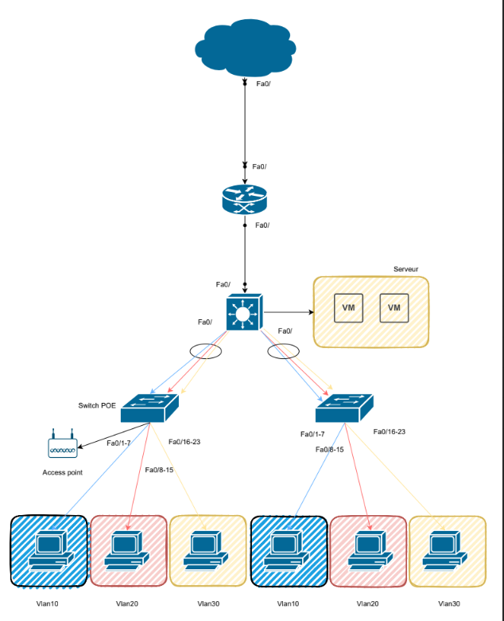
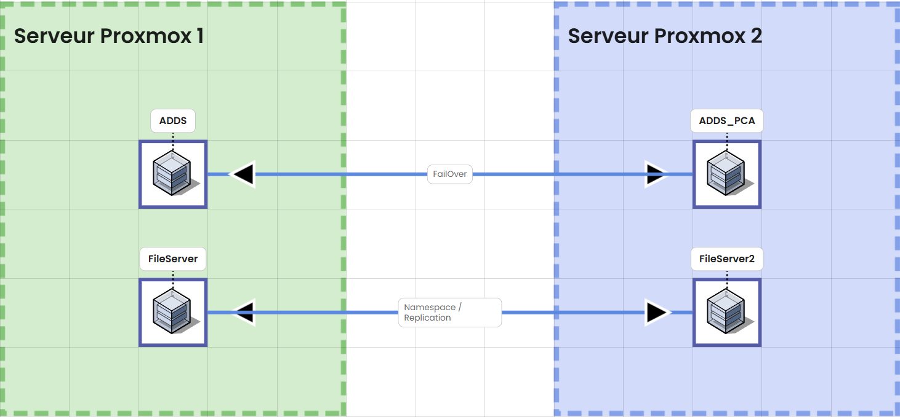

1. Contexte
Ce projet fictif a été réalisé dans le cadre d’un cours. J’y intervenais en tant que prestataire travaillant pour Station F.
Le projet s’est déroulé sur la durée du module, en travail de groupe. Notre mission consistait d’abord à concevoir et déployer une infrastructure système et réseau complète.
Dans un second temps, nous devions la faire évoluer afin d’y intégrer des mécanismes de continuité et de reprise d’activité (PCA/PRA), ainsi que des outils de supervision pour assurer le suivi et la disponibilité des services.2. Mon rôle
Premier phase : infrastructure
- Recensement des équipements sur GLPI
- Découpage réseau
- Recherche de solutions techniques
- Segmentation du réseau(VLAN, VTP)
- Routage Inter-VLAN
- Documentation

Deuxième phase : PRA, PCA et supervision
- Recherche de solutions
- Création d'un tableau de Gantt
- Mise en place d'un système de fichier résilient
(DFS namespace/réplication) - Audit de l'infrastructure réseau
- Documentation du projet

4. Ce que cela m’a appris
Mettre à disposition des utilisateurs un service informatique
Travailler en mode projet
Répondre aux incidents et aux demandes d’assistance et d’évolution
Gérer le patrimoine informatique